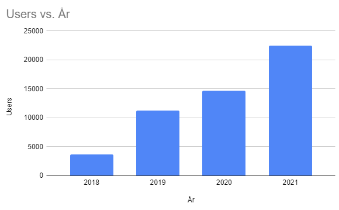
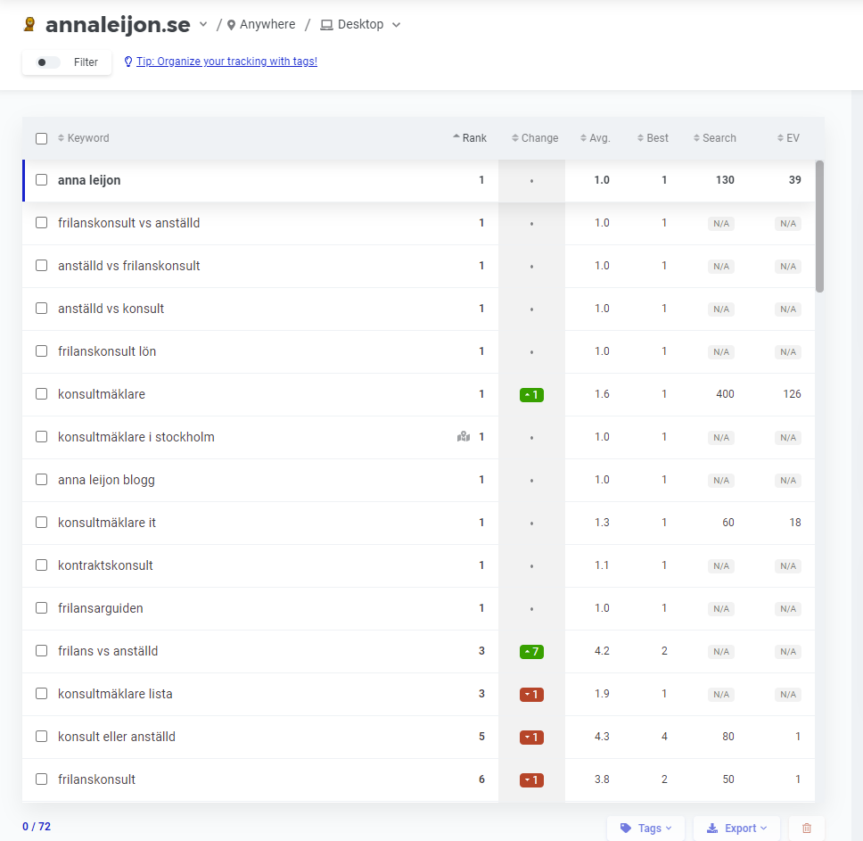
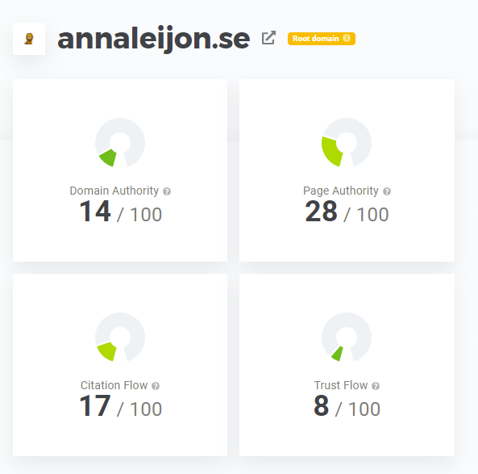
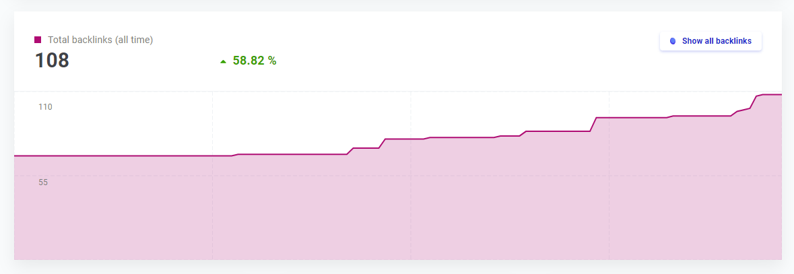

Anna Leijons årskrönika för 2021
Vilket fantastiskt år jag har haft. Jag har gift mig, startat bolag och fått våra första betalande kunder samt startat podcast och fått mina första sponsorförfrågningar. Det är bara några av mina personliga och professionella highlights från året som har gått. Det har varit så fantastiskt roligt och jag önskar bara att jag hade mer tid. Mer tid och mer inspiration. Ibland är jag så inspirerad att det fullkomligt spritter i kroppen och fingrarna, men ibland vill jag bara sträckkolla the Witcher på Netflix och åstadkomma så lite som möjligt. Det jag har åstadkommit (och inte) försöker jag utvärdera med mina nyårslöften och KPI:er för åren 2021 och 2022 i den här artikeln.
Jag kan börja med att säga att jag är otroligt tacksam över att jag har hittat så många och olika initiativ som jag verkligen brinner för och att de går i linje med min professionella karriär. Jag är otroligt tacksam över att jag har hittat min “nisch” där jag trivs, vill vara och frodas. Om jag bara fick använda ett ord för min nisch skulle det bli “techföretagande”. Om jag fick använda några fler ord skulle jag säga att jag är verksam inom tech, företagsbyggande och frilans med den specifika inriktningen produktutveckling. Jag tror att man mår bra av att identifiera sin nisch och jag tror att det är extremt många som aldrig gör ett aktivt val, utan “hamnar i den nisch de hamnar” och låter andra styra sina liv. Det dök upp en “möjlighet” och rätt vad det är så är man någonstans där man inte hade velat vara om man hade valt helt fritt. Eller så är det pengarna som lockar. Hur mycket pengar jag än får skulle jag aldrig byta till ett företag, bransch eller en sysselsättning jag inte vill verka inom långsiktigt. Jag vet var jag vill och vart jag ska - det kommer aldrig vara en slump att jag hamnar där jag hamnar. Ditt drömscenario kommer liksom aldrig ramla ned i knät på dig och fattar du inte aktiva beslut kommer någon göra det åt dig. Min hypotes är att man har störst chans att vara lycklig om man gör ett aktivt och informerat val och styr sin kosa själv, men vad vet jag. Jag lever efter det och jag har bara mig själv att utgå ifrån, men jag är lycklig och känner mig inspirerad ofta.
.JPG)
Som ni kanske vet gör jag bokstavligt talat ALLT inom min nisch. Jag frilansar på uppdrag åt andra, driver egna företag, bygger egna produkter, skriver artiklar, producerar egna podcasts, men är också med i andras podcasts, föreläser, håller i webinars, bygger egna hemsidor, håller i coachsamtal för de som vill och så vidare. Jag håller också på att skriva min första bok nu. Jag har den största frilansarbloggen i Sverige och min blogg börjar även bli stor bland techbloggarna. All typ av content creation tycker jag är roligt. All typ av techskapande tycker jag också är roligt. Man kan nog säga att jag är en mångsysslare. När folk hör av sig till mig och vill att jag ska gästblogga, hålla i webinars, vara med i deras podcast och så vidare så tycker jag i princip alltid att det låter jätteroligt, så fortsätt gärna med det! Jag tror att jag har olika energiresurser. Ibland vill jag skapa podcasts och jobba med röstmediet, medan det ibland är det ‘det skrivande ordet’ som lockar mig. Att hålla på med produktutveckling och tech, wireframes, flödesdiagram, algoritmer och till och med koda själv är så otroligt stimulerande också, men de stimulerar helt olika behov hos mig.
.JPG)
Att försöka nå ut med mina budskap och bygga såkallade tunga hemsidor är någonting som jag har hållit på med i några år nu. Närmare bestämt sedan 2018. Jag bygger mina hemsidor själv och publicerar en massa content kontinuerligt. Det går i linje med min ambition, intresse och önskan om att skriva/vara författare/talare/föreläsare med mera samt är även extremt användbart när man bygger egna företag och släpper egna produkter (vilket är en önskan och ett behov som jag har också). Jag vill också vara transparent med allt jag gör och hjälpa/inspirera andra, men jag har också ett behov av att dokumentera min egen progress av ren självbevarelsedrift. Även om jag hade haft noll läsare på min blogg så hade den ändå fyllt ett syfte för mig för jag går faktiskt ofta tillbaka och läser mina egna artiklar. Jag vill aldrig ha lärt mig någonting förgäves, utan jag vill dokumentera det så att det går snabbare när någon annan vill lära sig det nästa gång eller när jag själv behöver friska upp mitt minne. När jag läser mina egna artiklar efter en tid är det ofta jag tänker “är det jag som har skrivit det här?”. Man glömmer bort så lätt och tvingar jag mig själv inte att dokumentera min research, mina tankegångar och så vidare så kommer jag aldrig hitta tillbaka till dem. Av dessa anledningar har jag min personliga hemsida/blogg.
I flera år har jag satt upp nyårslöften för mig själv. De är ett slags KPI:er för mig personligen. De är både numeriska och kvalitativa. Vissa går att utvärdera på en skala, medan andra är binära (uppnåddes de - ja eller nej). Här följer mina nyårslöften inklusive en inventering av mina KPI:er. Det är främst sådana siffror som antalet följare, läsare, inlänkar, keywords, ranking och domain authority och så vidare. Det är dessa KPI:er som jag tittar på och vill förbättra kontinuerligt. Tipsa mig gärna om det är några KPI:er som du tycker att jag har missat att utvärdera: anna@annaleijon.com
Nyårslöften
Här kommer mina nyårslöften för året som har gått samt huruvida de är avklarade (check) eller inte (-). Sedan följer mina nyårslöften för det kommande året, ofta med en baseline från föregående år, och sedan med nästa års mål inom parentes.
Utvärdering av mina nyårslöften för 2021:
- Öka mina följare, lyssnare, besökare med mera överallt (check, mer om detta under mina nyårslöften för 2022)
- Personligt:
- Spara X kr (-, bröllopet, honeymoon med mera åt upp en hel del, vilket gjorde att jag inte lyckades med det här målet)
- Skaffa direktpension + skriva en artikel om det (-, det här ska jag göra 2022)
- Ta ledigt en längre tid. Det vill säga, vara utan frilansaruppdrag (check, 3 månader i somras, vilket är mitt såkallade sommarlov som jag har varje år)
- Känna oss klara med inredningen av lägenheten (-, vi kommer kanske aldrig känna oss klara :P)
- Segla till Gotland (-, tyvärr hann vi inte det på grund av bröllopet som tog upp större delen av sommaren)
- Resa till Australien (-, blev tyvärr inställt på grund av Covid)
- Starta nytt bolag (check)
- Hälsa:
- Träna i snitt 5-6 gånger i veckan (check, det blev 273 träningspass 2021. Om vi justerar för sjukdagar snittade jag närmare 6 gånger i veckan, men med sjukdagar närmare 5)
- Hålla stadig vilopuls på 48 (check)
- Springa marathon under 3,5 timmar (-, på grund av Covid)
- Springa topp 30 på Tjejmilen (-, på grund av Covid)
- Springa hem 1:a platsen i Sigtuna stadslopp (-, på grund av Covid)
- annaleijon.se
- Släppa fler artiklar på min hemsida än jag gjorde förra året (check)
- Fler externa samarbeten/engagemang än förra året (check)
- Dubbla antalet läsare på min hemsida (-, men ökade med 52 %)
- Dubbla antal nyhetsbrevsprenumeranter (-)
- Föreläsa (check)
- Släppa fler youtube-videor (check)
- Téamo:
- Dubbla antalet privata prenumeranter (-, det här har dessvärre inte varit fokus, utan fått växa organiskt, vilket betyder ganska långsamt)
- Dubbla omsättningen (-, men den ökade med 30 % i varje fall)
- Personligt:
- Spara Y kr (jag känner mig inte bekväm med att prata öppet om min ekonomi, men jag har mina sparmål)
- Skaffa direktpension + skriva en artikel om det
- Ta ledigt en längre tid. Det vill säga, vara utan frilansaruppdrag (minst 3 månader per år)
- Känna oss klara med inredningen av lägenheten
- Hälsa:
- Träna i snitt 5-6 gånger i veckan
- Vara mindre sjuk det här året än förra året då jag var sjuk 4 veckor totalt
- Hålla stadig vilopuls på omkring 48 slag per minut
- Springa marathon under 3,5 timmar
- Springa topp 30 på Tjejmilen
- Springa hem 1:a platsen i Sigtuna stadslopp
- Släppa min bok + ha releasefest
- Släppa fler artiklar på min hemsida än jag gjorde förra året, närmare bestämt för 2022: 15 stycken. Så här många har jag hittills släppt på min egna hemsida genom åren:
- 2021: 11 stycken
- 2020: 6 stycken
- 2019: 8 stycken
- 2018: 5 stycken
- Fler externa samarbeten/engagemang än förra året. Så här många har jag hittills ställt upp på genom åren:
- 2021: 2 webinars/videor, 4 podcasts, 1 artikel, 1 live-föreläsning
- 2020: 4 webinars/videor
- 2019: 5 artiklar, 1 podcast
- 2018: 1 video, 2 artiklar
- Släppa Konsultmäklarlistan 2.0
- Sammanfatta och publicera en utvärdering av “the 1 year freelance deal” och mina andra nedlagda initiativ
- Utöka min skrivarprofil från att inte bara handla om frilansande, utan också tech. Jag äger redan nischen “frilans”, men jag är inte nöjd där. Jag vill skapa mer content inom tech också.
- Släppa fler youtube-videor
- Ha fler coachsamtal (annaleijon.se/contact)
- Samt utöka dessa KPI:er:
- Följare/vänner:
- Linkedin: 3 509 (5 000)
- Instagram: 1 125 (2 000)
- Facebook: följare: 187 (300) och vänner: 1 831 (2 000)
- Youtube: 10 (20)
- Twitter: 15 (30)
- Antalet nyhetsbrevsprenumeranter: 203 (400)
- Antalet unika besökare/läsare på min hemsida 2021: 22 459 (50 000)
- Keywords-ranking:
- Antal sök i månaden på Anna Leijon: 130 (260)
- Behålla förstaplatsen på alla keywords som jag nu rankar etta på samt utöka till att ligga etta på ytterligare 50 % fler (se bild)
- Domain authority: enligt Mangools: 14/100 (25/100, det här borde jag verkligen jobba mer aktivt med än jag har gjort hittills)
- Antal inlänkar enligt Mangools: 108 stycken (200)





Flowby (flowby.io)
Dessa är inte synkade med övriga i medgrundargruppen än, men jag har lite tankar i de här banorna:
- Öka antalet betalande kunder, som nu är 3, till 20
- En första betalande utländsk kund
- En kund som har lanserat Flowby i hela sin kedja och med flera köer i varje butik (och inte bara en kö i en butik)
- En första betalande kund som har signat upp sig helt via self-service
- Större press-release och testa automatisk marknadsföring/sälj
- Samt utöka dessa KPI:er:
- Följare Linkedin: 118 (1 000)
- Besökare Google Analytics: 2 100 (10 000)
- Keywords-ranking: det här är ingenting som vi har fokuserat på hittills, men under 2022 är målet att sätta våra keywords och försöka ranka högt organiskt på dem
- Domain authority enligt Mangools: 8/100 (20/100)
Dessa är inte synkade med övriga i medgrundargruppen än, men jag har lite tankar i de här banorna:
- Skaffa en första företagskund åt Téamo
- Dubbla antalet privata prenumeranter
- Dubbla omsättningen
- Anlita säljare som jobbar helt på provision
- Samt utöka dessa KPI:er:
- Följare:
-
- Instagram: 746 (1500)
- Linkedin: 33
- Nyhetsbrev Mailchimp Subscribers: 113 (250)
- Domain authority enligt Mangools: 15/100 (25/100)
- Få första sponsorn till min podcast
- Släppa fler avsnitt än 2021 då jag släppte 11 stycken
- Samt utöka dessa KPI:er:
- Följare:
- Spotify: 157 (300)
- Apple podcasts: (har inte orkat skaffa något Apple-ID så vet inte den här siffran än)
- Google podcasts: har inte orkar kolla upp den här siffran heller. Det finns massa fler populära podcastplattformar som jag heller inte har riktigt koll på hur många följare jag har på.
- Linkedin: 84 (200)
- Facebook: 3
- Lyssnare:
- Cirka 300 lyssningar de två första veckorna efter att ett nytt avsnitt har släppts (600)
- Mitt första och äldsta avsnitt har 800 lyssningar och målet är att få fler lyssnare som också lyssnar igenom alla avsnitt (1 200)
- Besökare: Google Analytics: 1 900 (5 000)
- Keywords-ranking: det här är ingenting som jag har fokuserat på hittills, men under 2022 är målet att sätta några keywords och försöka ranka högt organiskt på dem
Antal medlemmar: 510 (700), men det finns egentligen inte ett egenintresse i att vi ska bli fler. Communityt blir inte automatiskt bättre bara för att vi är fler, men eftersom alla frilansare i Sverige är välkomna vore det riktigt coolt om också alla (eller majoriteten) fanns där. Jag skulle dock önska fler aktiviteter och mer engagemang i communityt 2022 jämfört med 2021, men Covid har ju också begränsat oss rejält. Hör av dig till mig om du vill ha en inbjudan, men observera att vi enbart vill ha med frilansare i Slack-communityt. Skicka i så fall ett mail till: anna@annaleijon.com
Avslutningsvis
Det är inte lätt att sätta upp rimliga och motiverande mål. Mina mål är oerhört ambitiösa och uppnår jag hälften och är oförändrad på resten (det vill säga, inte försämrad) skulle jag vara supernöjd. Det är också viktigt att inte jämföra sig med andra för mycket. Jag jämför mig med mig själv och vill bli bättre än jag är nu. Jag vill också vara helt transparent med mina siffror och tillvägagångssätt hela tiden. Jag tror jättemycket på modellen att börja göra saker som en hobby och sedan gratis, eller billigt, och ju bättre du blir desto mer kan du tjäna och kanske gå över till att bara hålla på med det som din huvudsysselsättning efter en tid. Det är den boostrappade, eller självfinansierade, modellen. Starta någonstans och starta litet. Ju förr du startar och börjar komma igång, desto bättre. Annars blir det en sådan där grej som du “aldrig kom dig för att göra”. Våga testa! Jag tror att jag lever på det här förhållningssättet fullt ut och jag vill rekommendera andra att våga göra det med. Jag vet att jag aldrig kommer ligga på min dödsbädd och tänka “tänk om…” för jag har uttömt och testat alla mina idéer och jag är också fullkomligt likgiltig kring vad folk tycker om mig eller mina idéer och deras output. Mitt mål är att kunna sluta sälja min tid för pengar (det vill säga, frilansa) och enbart kunna jobba i mina egna produkt- och/eller produktionsbolag. Innan jag var frilansare, och var anställd konsult, var mitt mål att sluta vara anställd av någon annan och starta eget. Där befinner jag mig åtminstone nu. Om du tar små steg i taget kommer du allt närmare din dröm. Som någon sa; på ett år kan du kanske inte göra jättestora förändringar, men på fem år kan du förändra allt.
Jag tror att det är extremt många som är kära i idén av att vara bra på någonting, men som egentligen aldrig har ambitionen eller önskan om att lära sig det på riktigt. Många säger till mig “jag har själv tänkt starta en egen podcast så många gånger. Det vore så roligt att ha en egen podcast.”. Jag tror att dessa personer är kära i idén om att ha en podcast. De är inte villiga att lägga ned den omfattande tiden det faktiskt tar att starta och underhålla en. Jag tänkte tanken om att det vore kul att ha en podcast en gång och sedan tänkte jag bara på hur jag rent praktiskt skulle genomföra det. Från att jag fick idén om att starta en podcast till dess att jag spelade in första avsnittet tog det två veckor. Jag behöver inte dagdrömma eller iterera samma tanke/dröm flera gånger, utan jag drömmer en gång och sedan börjar jag exekvera på den. Jag tror att många aldrig kommer ifrån drömstadiet och det är självklart helt okej att göra det också, men om du verkligen vill åstadkomma någonting och inte bara drömma måste du börja exekvera också. Nu har jag elva avsnitt och flera sponsorförfrågningar. Det handlar om att ta första steget och att dela upp elefanten i baby steps. Om du aldrig börjar kommer du aldrig veta om det var en grej för dig. Ingenting är heller ett misslyckande, utan någonting som du testade och lärde dig från. Om podcasten hade varit för jobbig att underhålla hade jag inte fortsatt och jag hade inte skämts över att erkänna att det helt enkelt inte var någonting för mig. Jag tror dock att jag nu har hittat en hållbar modell och ett upplägg som jag gillar. Det är viktigt att inte göra det jobbigare än det behöver vara!
Det är många som säger att man ska försöka fokusera på en grej. Jag lägger dock inte alla mina ägg i samma korg. Jag håller på med extremt många olika grejer parallellt, men jag tror som sagt att jag behöver göra det eftersom jag har olika energiresurser och behöver uppfylla mina olika behov. Ett tips kan dock vara att försöka komma igång med en grej, åtminstone i början. Det viktiga är att komma igång och försöka hålla någon form av konsekvent input till ditt initiativ eftersom det annars kommer att självdö. Låt det aldrig självdö, utan om du vill döda det, döda det i så fall aktivt. Det är otroligt dränerande och oinspirerande att se ens initiativ självdö långsamt och plågsamt över en lång tid. Det är bättre att göra slag i saken och döda den aktivt. Bekräfta för dig själv att du har testat den hypotesen, den stämde inte och gå vidare. Då frigörs en del av din tankekraft och det lättar bokstavligen från hjärtat. Du kan då skifta fokus och börja fokusera helhjärtat på något annat initiativ. Jag har haft så otroligt många initiativ som både självdött och som jag har dödat aktivt över åren. Ett exempel på ett initiativ som jag har dödat är “the 1 year freelance deal” som jag startade, men mer om det i en annan artikel. Jag ska skriva en egen artikel om alla mina “misslyckanden” längre fram. Nu vill jag säga tack för att du har läst min årskrönika för 2021 och god fortsättning samt lycka till inom din egna nisch och med dina egna initiativ 2022! Jag tror på dig <3
Om du har feedback eller input så får du gärna maila mig på anna@annaleijon.com
/Anna Leijon


NEWS LETTER
By subscribing, you will get notified when my next content is published before everyone else.
By subscribing, you will get notified when my next content is published before everyone else.